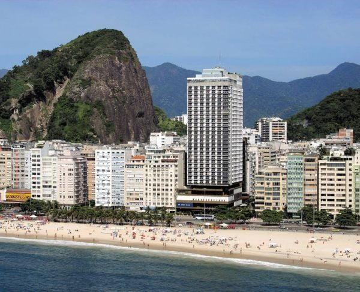

Rio Othon Palace

O Hotel Rio Othon Palace tem a praia de Copacabana a seus pés oferecendo aos seus hóspedes o privilégio de estar diante de um dos cartões postais mais bonitos e famosos do Rio de Janeiro e do mundo. O Hotel dispõe ainda de uma belíssima piscina em seu rooftop, banheira de hidromassagem*, restaurante 5 estrelas, spa, saunas, área kids, bares e salões de eventos. Mas não é só a beleza deslumbrante da Princesinha do Mar que atrai turistas do mundo todo. O bairro de Copacabana, com seu comércio cosmopolita, feiras de artesanato, restaurantes finos e típicos, bares e boates badalados, bons cinemas e salas de teatros, encanta os visitantes e aqueles que vivem no Rio de Janeiro com ótimas opções de lazer, a qualquer hora do dia e da noite. Além de possuir todo o encanto de Copacabana e estar próximo dos principais pontos turísticos da Cidade Maravilhosa, como o Corcovado e o Pão de Açúcar, é vizinho de outra praia famosa, a charmosa Praia de Ipanema.
Como chegar?
Av. Atlântica, 3264 - Copacabana, Rio de Janeiro - RJ, 22070-001,